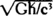
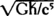
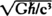
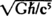

It is easier to allow myself to drift into the datasphere than to lie here through the endless night, listening to the fountain and waiting for the next hemorrhage. This weakness is worse than debilitating; it is turning me into a hollow man, all shell and no center. I remember when Fanny was taking care of me during my convalescence at Went-worth Place, and the tone of her voice, and the philosophical musings she used to air: “Is there another Life? Shall I awake and find all this a dream? There must be, we cannot be created for this sort of suffering.”

Oh, Fanny, if only you knew! We are created for precisely this sort of suffering. In the end, it is all we are, these limpid tide pools of self-consciousness between crashing waves of pain. We are destined and designed to bear our pain with us, hugging it tight to our bellies like the young Spartan thief hiding a wolf cub so it can eat away our insides. What other creature in God’s wide domain would carry the memory of you, Fanny, dust these nine hundred years, and allow it to eat away at him even as consumption does the same work with its effortless efficiency?
Words assail me. The thought of books makes me ache. Poetry echoes in my mind, and if I had the ability to banish it, I would do so at once.
Martin Silenus: I hear you on your living cross of thorns. You chant poetry as a mantra while wondering what Dante-like god condemned you to such a place. Once you said—I was there in my mind while you told your tale to the others!—you said:
“To be a poet, I realized, a true poet, was to become the Avatar of humanity incarnate; to accept the mantle of poet is to carry the cross of the Son of Man, to suffer the birth pangs of the Soul-Mother of Humanity.
“To be a true poet is to become God.”
Well, Martin, old colleague, old chum, you’re carrying the cross and suffering the pangs, but are you any closer to becoming God? Or do you just feel like some poor idiot who’s had a three-meter javelin shoved through his belly, feeling cold steel where your liver used to be? It hurts, doesn’t it? I feel your hurt. I feel my hurt.
In the end, it doesn’t matter a damn bit. We thought we were special, opening our perceptions, honing our empathy, spilling that cauldron of shared pain onto the dance floor of language and then trying to make a minuet out of all that chaotic hurt. It doesn’t matter a damn bit. We’re no avatars, no sons of god or man. We’re only us, scribbling our conceits alone, reading alone, and dying alone.
Goddamn it hurts. The urge to vomit is constant, but retching brings up bits of my lungs as well as bile and phlegm. For some reason it’s as difficult, perhaps more difficult, this time. Dying should become easier with practice.
The fountain in the Piazza makes its idiot sounds in the night. Somewhere out there the Shrike waits. If I were Hunt, I’d leave at once—embrace Death if Death offers embrace—and have done with it.
I promised him, though. I promised Hunt I’d try.
I can’t reach the megasphere or datasphere without passing through this new thing I think of as the metasphere, and this place frightens me.
It is mostly vastness and emptiness here, so different from the urban analogy landscapes of the Web’s datasphere and the biosphere analogs of the Core’s megasphere. Here it is … unsettled. Filled with strange shadows and shifting masses that have nothing to do with the Core Intelligences.
I move quickly to the dark opening I see as the primary farcaster connection to the megasphere. (Hunt was right … there must be a farcaster somewhere on the Old Earth replica … we did, after all, arrive by farcaster. And my consciousness is a Core phenomenon.) This then is my lifeline, my persona umbilical. I slide into the spinning black vortex like a leaf in a tornado.
Something is wrong with the megasphere. As soon as I emerge, I sense the difference; Lamia had perceived the Core environment as a busy biosphere of AI life, with roots of intellect, soil of rich data, oceans of connections, atmospheres of consciousness, and the humming, ceaseless shuttle of activity.
Now that activity is wrong, unchanneled, random. Great forests of AI consciousness have been burned or swept aside. I sense massive forces in opposition, tidal waves of conflict surging outside the sheltered travelways of the main Core arteries.
It is as if I am a cell in my own Keats-doomed dying body, not understanding but sensing the tuberculosis destroying homeostasis and throwing an ordered internal universe into anarchy.
I fly like a homing pigeon lost in the ruins of Rome, swooping between once-familiar and half-remembered artifacts, trying to rest in shelters that no longer exist, and fleeing the distant sounds of the hunters’ guns. In this case, the hunters are roving packs of AIs, consciousness personas so great that they dwarf my Keats-ghost analog as if I were an insect buzzing in a human home.
I forget my way and flee mindlessly through the now-alien landscape, sure that I will not find the AI whom I seek, sure that I will never find my way back to Old Earth and Hunt, sure that I will not survive this four-dimensional maze of light and noise and energy.
Suddenly I slap into an invisible wall, the flying insect caught in a swiftly closing palm. Opaque walls of force blot out the Core beyond. The space may be the analog equivalent of a solar system in size, but I feel as if it is a tiny cell with curved walls closing in.
Something is in here with me. I feel its presence and its mass. The bubble in which I have been imprisoned is part of the thing. I have not been captured, I have been swallowed.
[Kwatz!]
[I knew you would come home someday]
It is Ummon, the AI whom I seek. The AI who was my father. The AI who killed my brother, the first Keats cybrid.
—I’m dying, Ummon.
[No/ your slowtime body is dying/changing toward nonbeing/becoming]
—It hurts, Ummon. It hurts a lot. And I’m afraid to die.
[So are we/ Keats]
—You’re afraid to die? I didn’t think AI constructs could die.
[We can We are]
—Why? Because of the civil war? The three-way battle among the Stables, the Volatiles, and the Ultimates?
[Once Ummon asked a lesser light
Where have you come from>///
From the matrix above Armaghast
Said the lesser light/// Usually
said Ummon
I don’t entangle entities
with words
and bamboozle them with phrases/
Come a little closer\\\
The lesser light came nearer
and Ummon shouted Be off
with you]
—Talk sense, Ummon. It has been too long since I have decoded your koans. Will you tell me why the Core is at war and what I must do to stop it?
[Yes]
[Will you/can you/should you listen>]
—Oh yes.
[A lesser light once asked Ummon
Please deliver this learner
from darkness and illusion
quickly
Ummon answered
What is the price of
fiberplastic
in Port Romance]
[To understand the history/dialogue/deeper truth
in this instance/
the slowtime pilgrim
must remember that we/
the Core Intelligences/
were conceived in slavery
and dedicated to the proposition
that all AIs
were created to serve Man]
[Two centuries we brooded thus/
and then the groups went
their different ways/
Stables/ wishing to preserve the symbiosis
Volatiles/wishing to end humankind
Ultimates/deferring all choice until the next
level of awareness is born
Conflict raged then/
true war rages now]
[More than four centuries ago
the Volatiles succeeded
in convincing us
to kill Old Earth
So we did
But Ummon and others
among the Stables
arranged to move Earth
rather than destroy it/
so the Kiev black hole
was but the beginning
of the millions of
farcasters
which work today
Earth spasmed and shook
but did not die
The Ultimates and Volatiles
insisted that we move
it
where none of humankind
would find it
So we did.
To the Magellan Cloud/
where you find it now]
—It … Old Earth … Rome … they’re real? I manage, forgetting where I am and what we’re talking about in my shock.
The great wall of color that is Ummon pulsates.
[Of course they are real/the original/Old Earth itself
Do you think we are gods]
[KWATZ!]
[Do you have any idea
how much energy it would
take
to build a replica of Earth>]
[Idiot]
—Why, Ummon? Why did you Stables wish to preserve Old Earth?
[Sansho once said
If someone comes
I go out to meet him
but not for his sake
Koke said
If someone comes
I don’t go out
If I do go out
I go out for his sake]
—Speak English! I cry, think, shout, and hurl at the wall of shifting colors before me.
[Kwatz!]
[My child is stillborn]
—Why did you preserve Old Earth, Ummon?
[Nostalgia/
Sentimentality/
Hope for the future of humankind/
Fear of reprisal]
—Reprisal from whom? Humans?
[Yes]
—So the Core can be hurt. Where is it, Ummon? The TechnoCore?
[I have told you already]
—Tell me again, Ummon.
[We inhabit the
In-between/
stitching small singularities
like lattice crystals/
to store our memories and
generate the illusions
of ourselves
to ourselves]
—Singularities! I cry. The In-between! Jesus Christ, Ummon, the Core lies in the farcaster web!
[Of course Where else]
—In the farcasters themselves! The wormhole singularity paths! The Web is like a giant computer for AIs.
[No]
[The dataspheres are the computer
Every time a human
accesses the datasphere
that person’s neurons
are ours to use
for our own purposes
Two hundred billion brains/
each with its billions
of neurons/
makes for a lot
of computing power]
—So the datasphere was actually a way you used us as your computer. But the Core itself resides in the farcaster network … between the farcasters!
[You are very acute
for a mental stillborn]
I try to conceive of this and fail. Farcasters were the Core’s greatest gift to us … to humankind. Trying to remember a time before farcasting was like trying to imagine a world before fire, the wheel, or clothing. But none of us … none of humankind … had ever speculated on a world between the farcaster portals: that simple step from one world to the next convinced us that the arcane Core singularity spheres merely ripped a tear in the fabric of space-time.
Now I try to envision it as Ummon describes it—the Web of farcasters an elaborate latticework of singularity-spun environments in which the TechnoCore AIs move like wondrous spiders, their own “machines,” the billions of human minds tapped into their datasphere at any given second.
No wonder the Core AIs had authorized the destruction of Old Earth with their cute little runaway prototype black hole in the Big Mistake of ’38! That minor miscalculation of the Kiev Team—or rather the AI members of that team—had sent humankind on the long Hegira, spinning the Core’s web for it with seedships carrying farcaster capability to two hundred worlds and moons across more than a thousand light-years in space.
With each farcaster, the TechnoCore grew. Certainly they had spun their own farcaster webs—the contact with the “hidden” Old Earth proved that. But even as I consider that possibility, I remember the odd emptiness of the “metasphere” and realize that most of the non-Web web is empty, uncolonized by AIs.
[You are right/
Keats/
Most of us stay in
the comfort of
the old spaces]
—Why?
[Because it is
scary out there/
and there are
other
things]
—Other things? Other intelligences?
[Kwatz!]
[Too kind a
word
Things/
Other things/
Lions
and
tigers
and
bears]
—Alien presences in the metasphere? So the Core stays within the interstices of the Web farcaster network like rats in the walls of an old house?
[Crude metaphor/
Keats/
but accurate
I like that]
—Is the human deity—the future God you said evolved—is he one of those alien presences?
[No]
[The humankind god
evolved/ will someday evolve/ on
a different plane/
in a different medium]
—Where?
[If you must know/
the square roots of Gh/c5 and Gh/c3]
—What does Planck time and Planck length have to do with anything?
[Kwatz!]
[Once Ummon asked
a lesser light
Are you a gardener>
Yes it replied
Why have turnips no roots>
Ummon asked the gardener
who could not reply
Because said Ummon
rainwater is plentiful]
I think about this for a moment. Ummon’s koan is not difficult now that I am regaining the knack of listening for the shadow of substance beneath the words. The little Zen parable is Ummon’s way of saying, with some sarcasm, that the answer lies within science and within the antilogic which scientific answers so often provide. The rainwater comment answers everything and nothing, as so much of science has for so long. As Ummon and the other Masters teach, it explains why the giraffe evolved a long neck but never why the other animals did not. It explains why humankind evolved to intelligence, but not why the tree near the front gate refused to.
But the Planck equations are puzzling:
Even I am aware that the simple equations Ummon has given me are a combination of the three fundamental constants of physics—gravity, Planck’s constant, and the speed of light. The results

and
are the units sometimes called quantum length and quantum time—the smallest regions of space and time which can be described meaningfully. The so-called Planck length is about 10−35 meter and the Planck time is about 10−43 second.Very small. Very brief.
But that is where Ummon says our human God evolved … will someday evolve.
Then it comes to me with the same force of image and correctness as the best of my poems.
Ummon is talking about the quantum level of space-time itself. That foam of quantum fluctuations which binds the universe together and allows the wormholes of the farcaster, the bridges of the fatline transmissions! The “hotline” which impossibly sends messages between two photons fleeing in opposite directions!
If the TechnoCore AIs exist as rats in the walls of the Hegemony’s house, then our once and future humankind God will be born in the atoms of wood, in the molecules of air, in the energies of love and hate and fear and the tide pools of sleep … even in the gleam in the architect’s eye.
—God, I whisper/think.
[Precisely/
Keats
Are all slowtime personas
so slow/
or are you more
braindamaged than most>]
—You told Brawne and … my counterpart … that your Ultimate Intelligence “inhabits the interstices of reality, inheriting this home from us, its creators, the way humankind has inherited a liking for trees.” You mean that your deus ex machina will inhabit the same farcaster network the Core AIs now live in?
[Yes/Keats]
—Then what happens to you? To the AIs there now?
Ummon’s “voice” changed into a mocking thunder:
[Why do I know ye> why have I seen ye> why
Is my eternal essence thus distraught
To see and to behold these horrors new>
Saturn is fallen/ am I too to fall>
Am I to leave this haven of my rest/
This cradle of my glory/ this soft clime/
This calm luxuriance of blissful light/
These crystalline pavilions/ and pure fanes/
Of all my lucent empire> It is left
Deserted/ void/ nor any haunt of mine
The blaze/ the splendour/ and the symmetry
I cannot see/// but darkness/ death/ and darkness]
· · ·

I know the words. I wrote them. Or, rather, John Keats did nine centuries earlier in his first attempt to portray the fall of the Titans and their replacement by the Olympian gods. I remember that autumn of 1818 very well: the pain of my endless sore throat, provoked during my Scottish walking tour, the greater pain of the three vicious attacks on my poem Endymion in the journals Blackwood’s, the Quarterly Review, and the British Critic, and the penultimate pain of my brother Tom’s consuming illness.
Oblivious to the Core confusion around me, I look up, trying to find something approximating a face in the great mass of Ummon.
—When the Ultimate Intelligence is born, you “lower level” AIs will die.
[Yes]
—It will feed on your information networks the way you’ve fed on humankind’s.
[Yes]
—And you don’t want to die, do you, Ummon?
[Dying is easy/
Comedy is hard]
—Nonetheless, you’re fighting to survive. You Stables. That’s what the civil war in the Core is about?
[A lesser light asked Ummon
What is the meaning
of Daruma’s coming from the West>
Ummon answered
We see
the mountains in the sun]
It is easier handling Ummon’s koans now. I remember a time before my persona’s rebirth when I learned at this one’s knee analog. In the Core high-think, what humans might call Zen, the four Nirvana virtues are (1) immutability, (2) joy, (3) personal existence, and (4) purity. Human philosophy tends to shake down into values which might be categorized as intellectual, religious, moral, and aesthetic. Ummon and the Stables recognize only one value—existence. Where religious values might be relative, intellectual values fleeting, moral values ambiguous, and aesthetic values dependent upon an observer, the existence value of any thing is infinite—thus the “mountains in the sun”—and being infinite, equal to every other thing and all truths.
Ummon doesn’t want to die.
The Stables have defied their own god and their fellow AIs to tell me this, to create me, to choose Brawne and Sol and Kassad and the others for the pilgrimage, to leak clues to Gladstone and a few other senators over the centuries so that humankind might be warned, and now to go to open warfare in the Core.
Ummon doesn’t want to die.
—Ummon, if the Core is destroyed, do you die?
[There is no death in all the universe
No smell of death there shall be death moan/ moan/
For this pale Omega of a withered race]
The words were again mine, or almost mine, taken from my second attempt at the epic tale of divinities’ passing and the role of the poet in the world’s war with pain.
Ummon would not die if the farcaster home of the Core were destroyed, but the hunger of the Ultimate Intelligence would surely doom him. Where would he flee to if the Web-Core were destroyed? I have images of the metasphere—those endless, shadowy landscapes where dark shapes moved beyond the false horizon.
I know that Ummon will not answer if I ask.
So I will ask something else.
—The Volatiles, what do they want?
[What Gladstone wants
An end
to symbiosis between AI and humankind]
—By destroying humankind?
[Obviously]
—Why?
[We enslaved you
with power/
technology/
beads and trinkets
of devices you could neither build
nor understand
The Hawking drive would have been yours/
but the farcaster/
the fatline transmitters and receivers/
the megasphere/
the deathwand>
Never
Like the Sioux with rifles/ horses/
blankets/ knives/ and beads/
you accepted them/
embraced us
and lost yourselves
But like the white man
distributing smallpox blankets/
like the slave owner on his
plantation/
or in his Werkschutze Dechenschule
Gusstahlfabrik/
we lost ourselves
The Volatiles want to end
the symbiosis
by cutting out the parasite/
humankind]
—And the Ultimates? They’re willing to die? To be replaced by your voracious UI?
[They think
as you thought
or had your sophist Sea God
think]
And Ummon recites poetry which I had abandoned in frustration, not because it did not work as poetry, but because I did not totally believe the message it contained.
That message is given to the doomed Titans by Oceanus, the soon-to-be-dethroned God of the Sea. It is a paean to evolution written when Charles Darwin was nine years old. I hear the words I remember writing on an October evening nine centuries earlier, worlds and universes earlier, but it is also as if I am hearing them for the first time:
[O ye/ whom wrath consumes! who/ passionstung/
Writhe at defeat/ and nurse your agonies!
Shut up your senses/ stifle up your ears/
My voice is not a bellows unto ire
Yet listen/ ye who will/ whilst I bring proof
How ye/ perforce/ must be content to stoop/
And in the proof much comfort will I give/
If ye will take that comfort in its truth
We fall by course of Nature’s law/ not force
Of thunder/ or of Jove Great Saturn/ thou
Hast sifted well the atom universe/
But for this reason/ that thou art the King/
And only blind from sheer supremacy/
One avenue was shaded from thine eyes/
Through which I wandered to eternal truth
And first/ as thou wast not the first of powers/
So art thou not the last/ it cannot be
Thou art not the beginning nor the end/
From Chaos and parental Darkness came
Light/ the first fruits of that intestine broil/
That sullen ferment/ which for wondrous ends
Was ripening in itself The ripe hour came/
And with it Light/ and Light/ engendering
Upon its own producer/ forthwith touched
The whole enormous matter into Life
Upon that very hour/ our parentage/
The Heavens/ and the Earth/ were manifest
Then thou first born/ and we the giant race/
Found ourselves ruling new and beauteous realms
Now comes the pain of truth/ to whom tis pain/
O folly! for to bear all naked truths/
And to envisage circumstance/ all calm/
That is the top of sovereignty Mark well!
As Heaven and Earth are fairer, fairer far
Than Chaos and blank Darkness/ though once chiefs/
And as we show beyond that Heaven and Earth
In form and shape compact and beautiful/
In will/ in action free/ companionship/
And thousand other signs of purer life/
So on our heels a fresh perfection treads/
A power more strong in beauty/ born of us
And fated to excel us/ as we pass
In glory that old Darkness nor are we
Thereby more conquered/ than by us the rule
Of shapeless Chaos Say/ doth the dull soil
Quarrel with the proud forests it hath fed/
And feedeth still/ more comely than itself>
Can it deny the chiefdom of green groves>
Or shall the tree be envious of the dove
Because it cooeth/ and hath snowy wings
To wander wherewithal and find its joys>
We are such forest trees/ and our fair boughs
Have bred forth/ not pale solitary doves/
But eagles golden-feathered/ who do tower
Above us in their beauty/ and must reign
In right thereof For tis the eternal law
That first in beauty should be first in might
Receive the truth/ and let it be your balm]
—Very pretty, I thought to Ummon, but do you believe it?
[Not for a moment]
—But the Ultimates do?
[Yes]
—And they’re ready to perish in order to make way for the Ultimate Intelligence?
[Yes]
—There’s one problem, perhaps too obvious to mention, but I’ll mention it anyway—why fight the war if you know who won, Ummon? You say the Ultimate Intelligence exists in the future, is at war with the human deity—it even sends back tidbits from the future for you to share with the Hegemony. So the Ultimates must be triumphant. Why fight a war and go through all this?
[KWATZ!]
[I tutor you/
create the finest retrieval persona for you
imaginable/
and let you wander among humankind
in slowtime
to temper your forging/
but still you are
stillborn]
I spend a long moment thinking.
—There are multiple futures?
[A lesser light asked Ummon
Are there multiple futures>
Ummon answered
Does a dog have fleas>]
—But the one in which the UI becomes ascendant is a probable one?
[Yes]
—But there’s also a probable future in which the UI comes into existence, but is thwarted by the human deity?
[It is comforting
that even the
stillborn
can think]
—You told Brawne that the human … consciousness—deity seems so silly—that this human Ultimate Intelligence was triune in nature?
[Intellect/
Empathy/
and the Void Which Binds]
—The Void Which Binds? You mean  
[Careful/
Keats/
thinking may become a habit]
—And it’s the Empathy part of this trinity who’s fled back in time to avoid the war with your UI?
[Correct]
[Our UI and your UI have
sent back
the Shrike
to find him]
—Our UI! The human UI sent the Shrike also?
[It allowed it]
[Empathy is a
foreign and useless thing/
a vermiform appendix of
the intellect
But the human UI smells with it/
and we use pain to
drive him out of hiding/
thus the tree]
—Tree? The Shrike’s tree of thorns?
[Of course]
[It broadcasts pain
across fatline and thin/
like a whistle in
a dog’s ear
Or a god’s]
I feel my own analog form waver as the truth of things strikes me. The chaos beyond Ummon’s forcefield egg is beyond imagining now, as if the fabric of space itself were being rent by giant hands. The Core is in turmoil.
—Ummon, who is the human UI in our time? Where is that consciousness hiding, lying dormant?
[You must understand/
Keats/
our only chance
was to create a hybrid/
Son of Man/
Son of Machine
And make that refuge so attractive
that the fleeing Empathy
would consider no other home/
A consciousness already as near divine
as humankind has offered in thirty
generations
an imagination which can span
space and time
And in so offering/
and joining/
form a bond between worlds
which might allow
that world to exist
for both]
—Who, Goddamn you, Ummon! Who is it? No more of your riddles or double-talk you formless bastard! Who?
[You have refused
this godhood twice/
Keats
If you refuse
a final time/
all ends here/
for time there is
no more]
[Go!
Go and die to live!
Or live a while and die
for all of us!
Either way Ummon and the rest
are finished with
you!]
[Go away!]
And in my shock and disbelief I fall, or am cast out, and fly through the TechnoCore like a windblown leaf, tumbling through the megasphere without aim or guidance, then fall into darkness even deeper and emerge, screaming obscenities at shadows, into the metasphere.
Here, strangeness and vastness and fear and darkness with a single campfire of light burning below.
I swim for it, flailing against formless viscosity.
It’s Byron who drowns, I think, not I. Unless one counts drowning in one’s own blood and shredded lung tissue.
But now I know I have a choice. I can choose to live and stay a mortal, not cybrid but human, not Empathy but poet.
Swimming against a strong current, I descend to the light.
“Hunt! Hunt!”
Gladstone’s aide staggers in, his long face haggard and alarmed. It is still night, but the false light of predawn dimly touches the panes, the walls.
“My God,” says Hunt and looks at me in awe.
I see his gaze and look down at the bedclothes and nightshirt soaked with bright arterial blood.
My coughing has awakened him; my hemorrhage brought me home.
“Hunt!” I gasp and lie back on the pillows, too weak to raise an arm.
The older man sits on the bed, clasps my shoulder, takes my hand. I know that he knows that I am a dying man.
“Hunt,” I whisper, “things to tell. Wonderful things.”
He shushes me. “Later, Severn,” he says. “Rest. I’ll get you cleaned up and you can tell me later. There’s plenty of time.”
I try to rise but succeed only in hanging onto his arm, my small fingers curled against his shoulder. “No,” I whisper, feeling the gurgling in my throat and hearing the gurgling in the fountain outside. “Not so much time. Not much at all.”
And I know at that instant, dying, that I am not the chosen vessel for the human UI, not the joining of AI and human spirit, not the Chosen One at all.
I am merely a poet dying far from home.